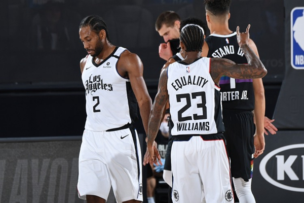
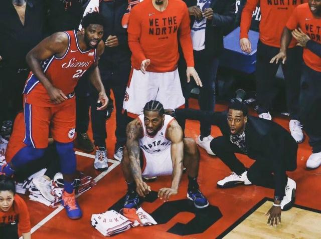
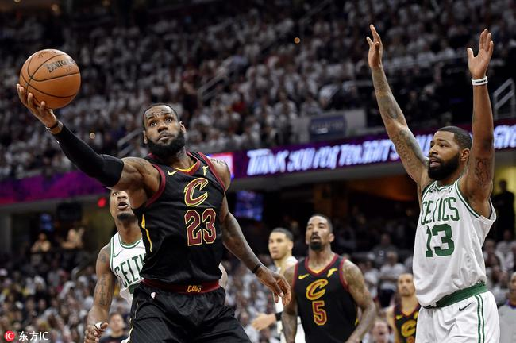

2020NBA季后赛西部半决赛迎来了强强对话，掘金跟快船的决胜局一触即发，湖人队已经在4天前就锁定了西部决赛的席位，而湖人的竞争对手还没有确认。掘金以104-89顺利收割比赛，帮助掘金4-3逆转淘汰快船掘金。连下三城!掘金完成超级逆转!
掘金队VS快船队双方首发：
掘金：穆雷、哈里斯、米尔萨普、格兰特、约基奇
快船：乔治、贝弗利、莱昂纳德、小莫里斯、祖巴茨
掘金队VS快船队比赛数据：
掘金队，格兰特14分5篮板，约基奇16分22篮板13助攻，哈里斯14分6篮板，穆雷40分5助攻。快船队，莱昂纳德14分6篮板6助攻，乔治10分，格林11分6篮板，哈雷尔20分，贝弗利11分5篮板6助攻。
第一节，掘金队6-2开局。快船队一波7-0以9-6领先。穆雷三分，双方11-11战平。约基奇的发挥，帮助掘金队17-13。掘金队保持领先优势24-19，乔治三分，快船队一波5-0以24-24追平结束第一节。
第二节，快船队30-25。莱昂纳德格林三分，快船队36-27领先9分。掘金追分34-39。快船队保持领先优势45-38，莱昂纳德连得五分，快船队50-38。快船队保持领先54-43，穆雷拿下9分，掘金队一波11-2之后追到了54-56结束上半场。
第三节，祖巴茨两分，贝弗利三分，快船队61-54。掘金队开始反击，格兰特穆雷哈里斯三分开火，掘金队一波16-2的攻击波，以70-63反超，米尔萨普两个三分，掘金队76-67领先到了9分。掘金队保持领先82-74结束第三节。
第四节，还剩8分48秒，穆雷三分命中，掘金队一波7-0以89-74领先到了15分。快船队依靠格林罚球拿下两分。分差在15分和13分拉锯，穆雷三分格兰特扣篮，掘金队100-80，比赛还剩2分10秒胜负已定，快船队此时第四节只得了6分。掘金队104-89战胜快船队。
这场比赛掘金队表现的非常出色，在上半场比赛，当快船队把比分差距拉大至，球队在穆雷的带领下，紧咬比分，而到了下半场，球队在保持高效的进攻时，提升了防守强度，让快船队单节只拿到18分，进入到最后一节之后，掘金队进一步扩大领先优势，而在关键时刻，当快船队缩小分差时，球队也顶住压力，把领先优势保持到了最后，最终取得这场比赛的胜利，取胜之后，掘金队也成功的以4-3的比分淘汰快船队，晋级西部决赛。在今年季后赛当中，掘金队前两轮均在1-3落后的情况下，完成了逆转，表现可谓是足够出色。
而快船队作为夺冠热门，球队在大比分领先的情况下，没有能够把握住机会，让对手连胜三场，最终在西部半决赛就遗憾出局，这算是一个不小的冷门，在这场比赛中，乔治和伦纳德的表现都不够理想，进攻效率不高，在防守端也没有很好的表现，这也导致球队最终落败。
但是在双方的抢七大战当中，可以明显感觉到莱昂纳德和保罗乔治心有余而力不足，从比赛的过程来看，他们非常希望能够凭借自己优异的表现率领球队进入西决，但是面对已经完全打出气势的掘金队，莱昂纳德和保罗乔治的心态逐渐失衡，其中一向分差稳定的莱昂纳德，本场比赛打出了职业生涯最差的季后赛表现之一，全场22次出手只命中了6球，个人贡献也仅有14分、6个篮板、6次助攻、2次抢断和1个盖帽，正负值全队最差的负21，而保罗乔治同样状态不佳，全场比赛16次出手只命中了4球，个人贡献仅为10分、4个篮板和2次助攻，而且他还出现了全队最高的5次失误!
的确从快船队的本场表现来看，他们输的并不冤，想要成为一支总冠军级别的球队，不仅仅是靠囤积球星就能够做到的，他们最大的问题就是缺乏一个出色的体系，相信在赛季结束之后，球队管理层会对球队的阵容进行大幅的调整，期待下赛季快船队卷土重来!

19季后赛中猛龙对战76人，可谓是东部豪强誓死杀敌之战，两队不相上下但最终还是以莱昂纳德长两分绝杀送走了费城76人。这场大战费城军团也是消耗了多伦多猛龙的很大一部分体力，猛龙的季后赛一路坎坎坷坷，但最终还是拿下了队史第一座奥布莱恩奖杯，完虐魔术，血战费城，逆转雄鹿。这支球队创造了历史，大换血第一年也如愿以偿拿到了总冠军的奖杯，多伦多留下了历史，刻骨铭心！
究根结底，76人超强阵容，拥有现金联盟第一中锋乔尔恩比德、全明星状元秀本西蒙斯、铁血战士吉米巴特勒、球盲鉴别器霍福德、三分神射手JJ雷迪克，这样具有超强阵容的费城76人却被刚刚大换血的莱昂纳德带领的猛龙队打败，属实难堪。为何阵容超强的费城会输给多伦多，我们来详细解析！ 马刺队休赛期将德罗赞与莱昂纳德几乎可以称为互换，莱昂纳德的到来也是绝对的为猛龙队的实力大大提升，猛龙队的防守和进攻能力整体上升一个档次，莱昂纳德的实力也是德玛尔德罗赞不能比的，马刺队也是非常不情愿的一笔交易，但是波波维奇毫无办法，一心想要出走的莱昂纳德是留不住的，只能看准时机来一笔交易，预防莱昂纳德合同年到了分文不得。莱昂纳德绝对可以称为联盟攻防一体的巨星，况且他也正在处于生涯的巅峰期，经过波波维奇老爷子多年的指导，莱昂纳德的中投技术也练到了炉火纯青的地步，给人的一个字形容就是“稳”。
莱昂纳德早就以及证明过自己，在2014年总决赛中，硬是靠单防勒布朗詹姆斯，封锁勒布朗的传球路线，年仅21岁就拿下了总决赛的MVP，莱昂纳德非常适合打团队篮球，但是在团队进攻梳理不开的时候，莱昂纳德也会化身英雄来解决球队的得分不稳定的状况。莱昂纳德适合打硬仗，它具有出色的身体素质，并且比较擅长达到内线造成杀伤，经过圣安东尼奥马刺队的洗礼，强硬的风格还是印在了骨子里，圣安东尼奥马刺队的铁血精神还尚未销声匿迹，莱昂纳德非常善于利用身体和技术的结合来获取得分，并且莱昂纳德的身高2.01米，但是臂展可以达到恐怖的2.21米，这样的静态数据是非常可怕的，还有莱昂纳德拥有一双恐怖的大手，这让他成为了一名天生的优质防守者，反应速度极快，容易切断对手传球路线。确实，莱昂纳德比德罗赞强了不止一个档次，德罗赞的防守一直是诟病，在季后赛一直被针对，虽然中投有所建树，但是一到季后赛便有所萎靡不振导致球队输球。德玛尔德罗赞乍一看确实和卡哇伊莱昂纳德的数据差不多吗，但是论带队能力和季后赛实力以及技术全面性，德罗赞确实差了几个档次。因此说莱昂纳德的加盟是猛龙赢得费城76人的最有利因素。
小加索尔防守恩比德成为了猛龙赢得费城76人的关键点，恩比德被小加索尔限制的异常低迷，昔日最佳防守球员大显神威。小加索尔无疑是系列赛中防守恩比德效果最好的球员，众所周知，马克加索尔的防守能力非常出众，曾经也评选为最佳防守球员，两次入选最佳防守阵容，并且曾经在灰熊也是全明星常客，凭借出色的防守入选的全明星。在灰熊时代，马克加索尔与兰多夫的内线组合就成为了季后赛许多球队的噩梦，就算可以赢下系列赛，但是也会被全员皆兵的灰熊队扒一层皮，消耗对手大部分的体力，“黑白双熊”时代甚至是总冠军球队都不愿意碰到的季后赛的中流砥柱。
马克加索尔的下肢力量非常稳健，联盟中几乎所有中锋背身单打都很难顶动马克加索尔，恩比德的下肢力量很明显没有马克加索尔的力量出色，所以乔尔恩比德就是吃在了内线单打丝毫对抗不了马克加索尔的亏上。这几年乔尔恩比德在与马克加索尔的对位上可是吃了不少亏，加索尔仿佛是笼罩在恩比德天空上的重重阴霾，让乔尔恩比德似乎看不到宽阔的天空，恩比德与马克加索尔的对位中，这几年似乎也没占到小加索尔丝毫便宜。76人在系列赛与猛龙的大战中，恩比德面对马克加索尔作为一个内线，命中率居然有3场连30％都不到，5场命中率不到40％，乔尔恩比德被誉为联盟第一中锋也似乎也是有一丝难堪，面对猛龙的季后赛，乔尔恩比德场均17.6分3.3助攻8.7篮板4次失误，投篮命中率37％，并且乔尔恩比德面对马克加索尔的时候，投篮仅仅为47出手15命中，这可是远远低于常规赛的水平，命中率水平低下，仅仅为31.9％，马克加索尔和西亚卡姆形成的内线屏障让费城76人非常难受，西蒙斯也无力突破，进去便会受到非常强大的干扰，一旦突破便有两位防守大将在内线等着盖帽。
确实如此，西蒙斯从进入NBA开始，投篮便是他的一大弱项，本西蒙斯除了投篮一切几乎都属于顶级配置，西蒙斯具有出色的身体素质，突破能力极其出色，并且杀到内线的命中率极高，另外本西蒙斯的防守能力出色，移动脚步非常的灵活，并且丝毫不惧怕身体对抗，二次进攻篮板能力也是属于顶配，并且拥有出色的大局观与视野，使得自身拥有一身绝佳的传球能力。可就是这投篮能力偏偏就是影响本西蒙斯的最大因素，到了季后赛本西蒙斯的投篮能力不足的问题被无限放大，甚至说猛龙队面对本西蒙斯几乎是放投的，本西蒙斯在那次系列赛之前作为状元，并且是球队的控球核心，甚至连一记三分都没有投进过，属实让人难堪。就算是西蒙斯成长为字母哥的投篮准度，76人在与猛龙的系列赛也不会输给猛龙，西蒙斯在系列赛场均13.9分6.0助攻7.0篮板1.3抢断1.0盖帽，投篮命中率为62.1％，但是从来没有出手过三分球，这就是短板所在，而在常规赛本西蒙斯的场均数据可以达到16.9分7.7助攻8.8篮板2.1抢断0.6盖帽，投篮命中率为56.3％，我们可以看出西蒙斯的季后赛数据与常规赛比较有所下滑，很大一部分原因是本西蒙斯的投篮问题，也是西蒙斯和球队最头疼的问题，对方球队几乎将本西蒙斯的长两分和三分放投，专注于防守内线，西蒙斯突破不进内线，打得相当难受，上帝赐予了西蒙斯所有绝佳的篮球天赋，可就是者投篮的准度却是限制西蒙斯在NBA中有所作为的重要因素，西蒙斯必须提高自己的投篮才会将76人带入争冠的行列。

最强整体 VS 最强个体。当骑士只获得了常规赛第四，在第一轮被步行者拖进抢七才堪堪险胜的时候，多少人都看衰他们，结果他们4:0把常规赛第一猛龙打成了小龙虾。当凯尔特人失去了海沃德和欧文后，他们先是丢掉了东部第一宝座，然后首轮被雄鹿拖进了抢七，又有多少人看衰他们，结果他们4:1把天赋蔓延到月球的76人打发回家。
但是内容是不同的，骑士几乎完全靠LBJ，他实在是太强了。。。。季后赛40+次数，你能想到的得分高手，科比13次，AI10次，杜兰特7次，韦德7次。而詹姆斯光今年季后赛打到现在为止就4次，整个职业生涯目前23次。。。。哦另外提一句，MJ是38次，而且他只打了179场。。。。其中8场50+，1场60+。拉回来，上一个这么Carry球队往前冲的，只有MJ。90年季后赛MJ6场40+，但是倒在了东决，93年季后赛MJ同样6场40+而且有两场是50+，包括总决赛4场40+其中1场50+。。。。。LBJ今年截至目前的表现完全可以媲美当时的MJ，当然了，我们不从防守强度比赛节奏这么高阶的地方去谈，这也不是这个问题问的东西，我就这么一说。。。。。如果没有LBJ，骑士几乎就是鱼腩球队，即使在东部，他们能不能闯进季后赛都是问题，但是加上他，骑士就是总决赛级别的球队，即使在西部。。。。这一点我深信不疑。他的影响力无需多言。第一轮除了乐福场均11.4分外他们再无人得分上双，他们能险胜步行者几乎全是靠LBJ疯狂的输出。G2得了46分，赢3分，G5是44分，靠压哨绝杀赢3分，G7靠着他的45分最后4分险胜。。。。。这三场球里哪怕有一场LBJ发挥的稍微疲软点，骑士就挂了。。。。但是第二轮骑士显然意识到了这个问题，他们加强了进攻的整体性，当然另一方面这也跟猛龙恰好几个点都对不上有很大关系，猛龙缺乏灵活的护框者和外线大钳，LBJ打得更加游刃有余，他的助攻从首轮的7.7上升到11.3，成功带动了队友，当然类似于G3这样的关键时刻还是得靠他自己拿下来。而另一方面，凯尔特人是把团队篮球演绎到极致的球队：打雄鹿的第一轮，绿军5人场均得分两位数，其中4人是15+，但是没有一个人20+。打76人的半决赛，绿军更是6人场均得分两位数，塔图姆终于20+了。这就是凯尔特人，是不是很像08年他们夺冠那一次？只不过名气没当年的三巨头响亮罢了，骨子是一样的。如果你以为现在这支凯尔特人跟去年东决被骑士虐的死去活来的那支队伍一样，你就错了，现在这支凯尔特人打得更均衡，更合理，而且他们更有天赋，新人塔图姆和罗齐尔异军突起，成为非常可靠的突破手，而且作为新人他们打得很无私，乐于分享球。对于即将到来的东决，我觉得骑士并没有想象中的轻松，凯尔特人跟猛龙不同，猛龙说穿了也是打球星篮球，德罗赞和洛瑞Carry，但是他们的天赋远不如LBJ，必须记住，要赢LBJ就要走和他不同的路，巨星对A这种套路谁都干不过他，哪怕是勇士加入了杜兰特，也必须靠正好的整体性去抗衡他，他就是这么强，你服不服那能力都在那摆着。而凯尔特人偏偏是整体性最好的球队之一，这里没有个人英雄主义，没有不合理的无脑强投，一切机会通过传导制造，谁有机会谁出手而且都有相当把握，这种队伍是LBJ最忌惮的，比如05-07的活塞，08-12的凯尔特人，13-14的马刺，15-17的勇士都让他吃足了苦头，这些队都靠更好的传导和更无私的打法来对付他。要击败所向披靡的神兵利刃LBJ，你跟他强刚是没用的，你干不过他。12年的杜兰特，13-14年的乔治，这几年的德罗赞洛瑞，都领教过了，必须靠整体来压制他的队伍，凯尔特人具备这样的潜力。但是我觉得骑士还是机会更大，只要不是那种落后太多的局面，打到最后半节比分仍然接近的话，LBJ将会终结对手。。。。最后说一句，G1很重要，如果G1凯尔特人拿下，系列赛将会很有趣，但是G1如果骑士拿下，比赛很可能在5场内结束。END
本文来源于知乎